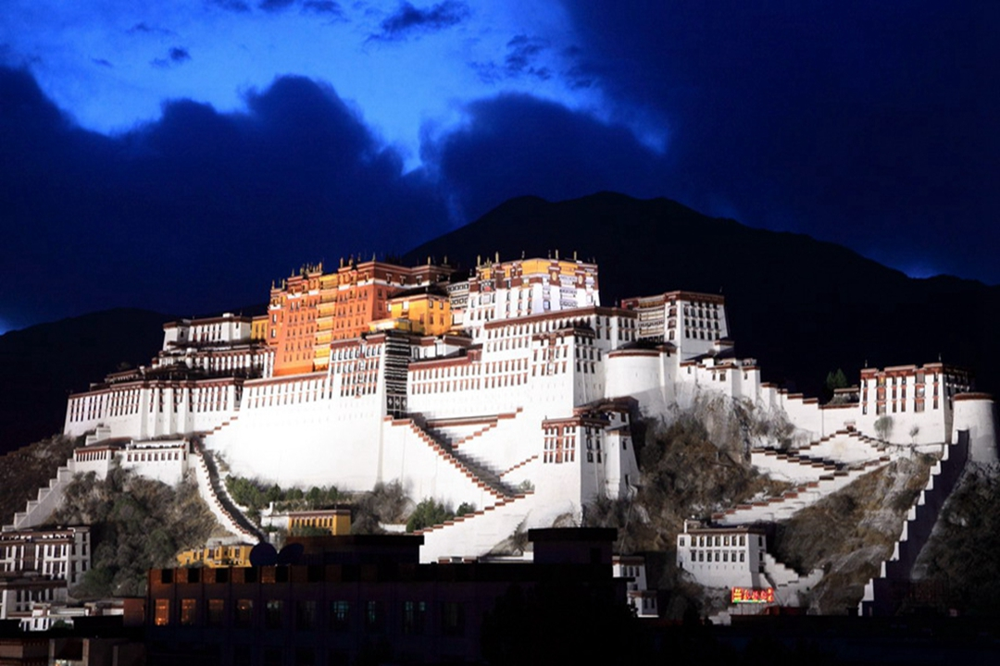
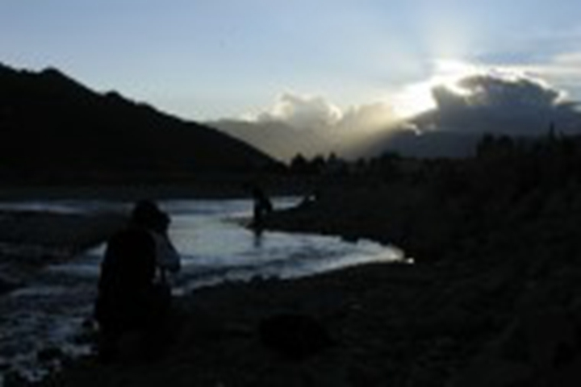
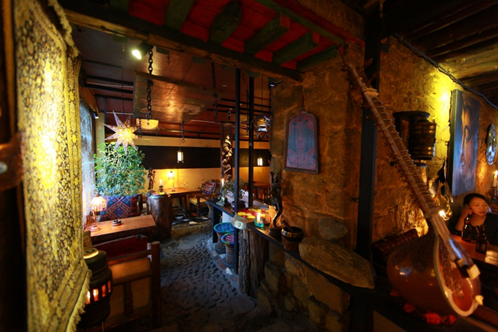
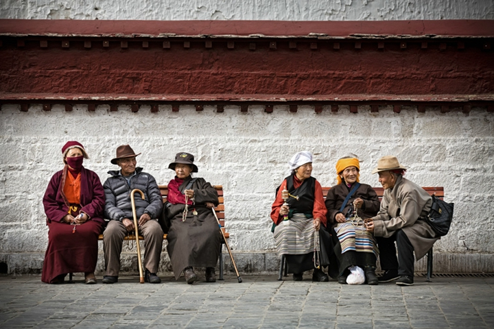
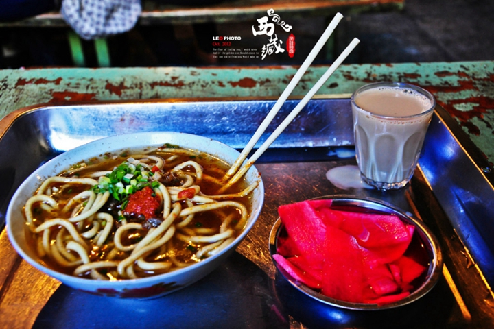
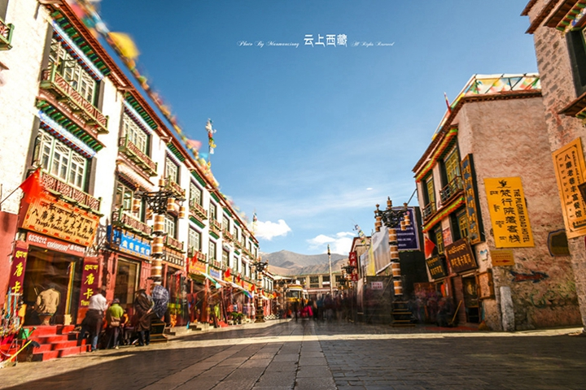
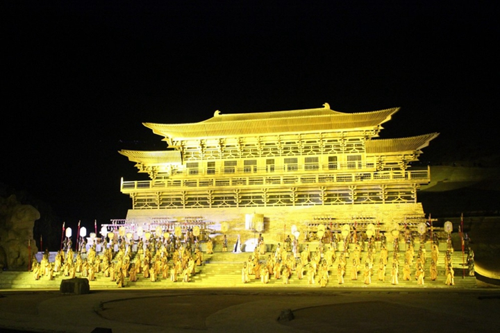

-
千风万景中遇见你 - 首页
- 精选
- 邂逅
-

- 消息

目的地>中国>拉萨
La Sa


拉萨

拉萨天气
晴 15℃~22℃
152人来过这里
56篇旅游日志
56篇旅游日志

景点介绍
拉萨，藏语里的意思是神居住的地方。它是西藏自治区首府，海拔3700米，被称为“日光城”。他是藏族人心中的圣城，如今也成为四方游客的“圣城”。几年前说它是个城市还不太恰当，但现在已经越来越接近我们所熟悉的大城市了，酒店、银行、商场、专卖店，繁华到无需考虑这里是雪域高原的事实。包括整修一新的布达拉宫广场，仿若与我们脑海中的拉萨不能对号入座，无论如何，你站在了新时代的拉萨，去接受他吧。
在街头巷尾的茶馆里，在八廓街转经的人潮中，依然可以嗅到旧时的味道，你依然会爱上这里。 布达拉宫广场前的双手合十，大昭寺前凝望信仰的力量，用指甲去触摸经筒的温暖，甜茶馆里聆听市井的声音，慵懒地卧于被阳光包围的躺椅之中，闲散地漫步于拉萨河边。
当然，你能做的还不止这些，色拉寺后山上俯瞰拉萨城会给你一个不同的视角，拉鲁湿地远眺布达拉宫更能让你体味她的伟岸，在宗角禄康公园和藏胞们一起跳锅庄使你舞在布宫下，路边摊的酸奶和土豆条让你置身于3700米的“麦当劳“，八角街上给亲朋好友淘一些圣城的祝福回去吧。
日光之城”拉萨是多少人心灵的家园，在3700多米的海拔上，浓厚的宗教氛围和悠久的历史遗迹让人激动的眩晕。
景点美照






- 2016-2017© 遇见网® yujian.com All rights reserved.Version v1.00
遇见网为旅行爱好者提供记录自己旅途见闻并展示的个人空间。